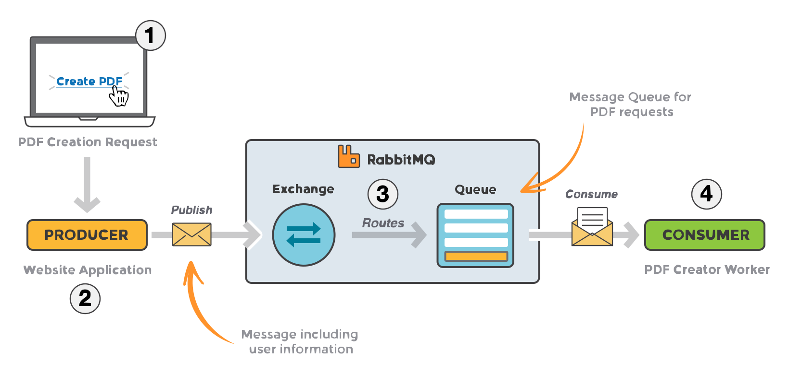
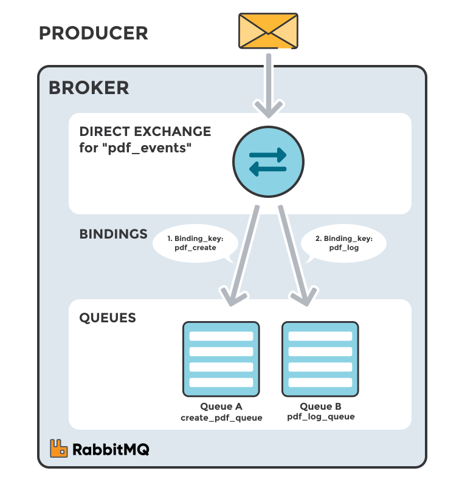
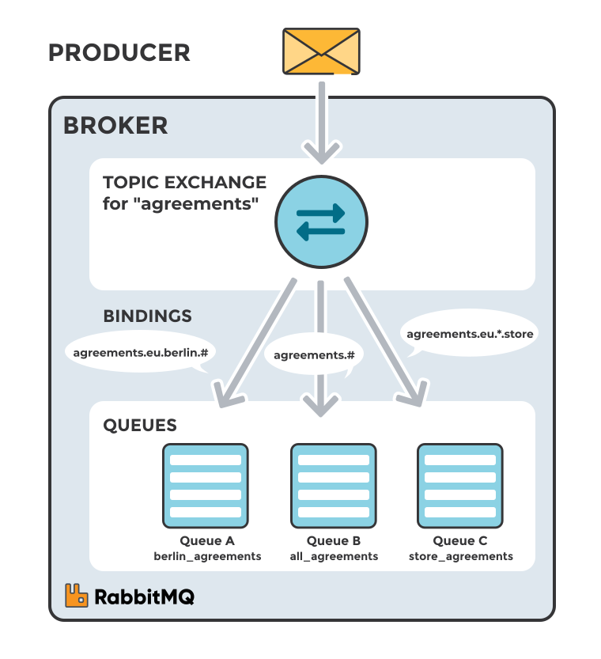
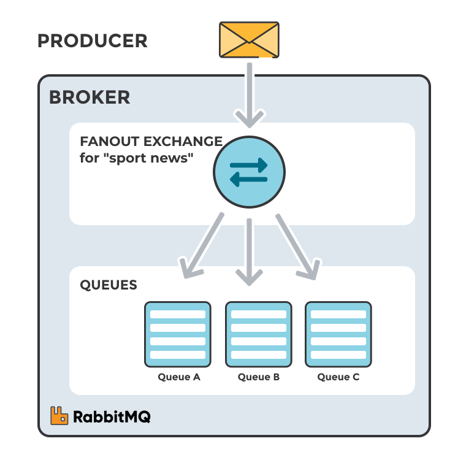
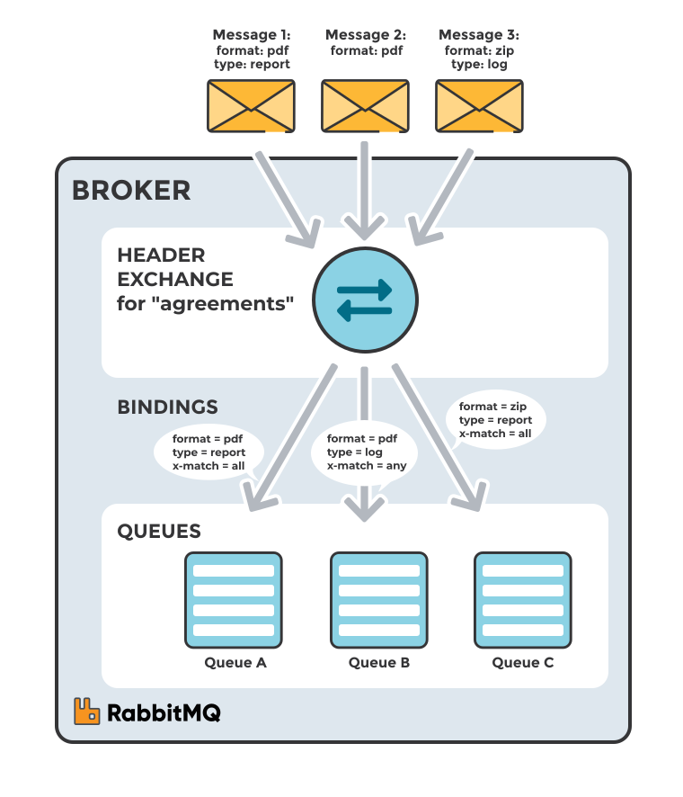

RabbitMQ is message-queueing software, also called a message broker or queue manager. Simply it is software where queues are defined, and applications connect to those queues to send messages to each other.
A message can carry many kinds of information — for example, details of a task that should run on another application (possibly on another server) or just a simple text message.
The broker stores messages until a receiving application connects to the queue and takes them off for processing.
The queue-manager software (message broker) stores messages until a receiving application connects to the queue and takes the messages off the queue for processing.
A queue in RabbitMQ is an ordered collection of messages. Messages are enqueued and dequeued (delivered to consumers) in a FIFO manner.
A WORKED EXAMPLE
A message broker acts as a middleman between services. This can reduce load and response time on a web server by handing off slow or resource-heavy work to a separate process.
Imagine a website where a user uploads some information and the system must generate a PDF and email it back. Producing the PDF takes several seconds — a good reason to move the work off the request path and onto a queue.
When the user enters information into the web interface, the web application will create a PDF processing message that includes all of the important information needed to perform the task.
The basic architecture of a message queue is simple. There are client applications called producers that create messages and deliver them to the broker (the message queue). Other applications, called consumers, connect to the queue and subscribe to the messages for processing. Software can act as a producer, a consumer, or both a consumer and a producer of messages. Messages placed onto the queue are stored until the consumer retrieves them.
WHEN AND WHY TO USE
Message queueing allows web servers to respond quickly to requests instead of being forced to perform resource-heavy procedures on the spot that may delay response time. Message queueing is also useful when you want to distribute messages to multiple consumers or to balance loads among workers.
Message queueing lets a web server respond quickly instead of blocking on slow, resource-heavy work.
While the consumer processes one message, the producer keeps adding new ones. The two sides can live on different servers and even be written in different languages — they communicate only through messages, so they stay loosely coupled. When the worker crashes or a burst of requests arrives, messages simply accumulate in the queue until the consumer is back, after which it processes them one by one in order.

Exchanges, bindings and routing
The messages are not published directly to a queue, instead the producer sends messages to an exchange. The exchange is responsible for routing messages to different queues using bindings and routing keys. A binding is a link between a queue and an exchange.
The message flow through RabbitMQ
The producer publishes a message to an exchange whose type is chosen when it is created.
The exchange receives the message and is now responsible for the routing of the message.
The exchange routes the message, taking attributes such as the routing key into account depending on its type.
Bindings must be created from the exchange to queues.
The exchange routes the message into the queues depending on message attributes.
The messages stay in the queue until they are handled by a consumer.
The consumer processes the message.
Types of exchanges
Type
Routing behavior
Direct
Routes to queues whose binding key exactly matches the message's routing key (for example, binding key pdfprocess receives messages published with routing key pdfprocess).
Fanout
Routes a copy to every queue bound to it, ignoring the routing key.
Topic
Does a wildcard match between the routing key and the pattern given in the binding.
Headers
Routes using the message's header attributes instead of the routing key.
RabbitMQ and server concepts
Concept
Meaning
Producer
Application that sends messages to the broker.
Consumer
Application that receives messages from the broker.
Queue
Buffer within the broker that stores messages.
Message
Information sent from a producer to a consumer through the broker.
Connection
A TCP connection between your application and the broker.
Channel
A virtual connection inside a connection; publishing and consuming happen over a channel.
Exchange
Receives messages from producers and routes them to queues depending on rules defined by the exchange type. A queue must be bound to at least one exchange to receive messages.
Binding
A link between a queue and an exchange.
Routing key
A key the exchange uses to decide how to route a message — like an address.
AMQP
Advanced Message Queuing Protocol, the core protocol RabbitMQ uses for messaging.
Users
Connect with a username and password; each user can have read, write, and configure permissions.
Vhost (virtual host)
Segregates applications using the same RabbitMQ instance; queues and exchanges can exist in only one vhost.
Publishing and subscribing
RabbitMQ uses AMQP by default, so your application needs a client library that speaks the same protocol. A client library is an API with methods for connecting to the broker, declaring queues and exchanges, and publishing or consuming messages; libraries exist for almost every language. A typical sequence is:
Create a connection object (host, port, username, password, so on).
A TCP connection opens when the connection starts.
Open a channel inside that connection to send and receive messages.
Declare a queue — declaring creates it if it does not already exist.
Declare any exchanges and bind the queue to an exchange so messages can be routed to it.
Publish a message to an exchange (producer), or consume a message from a queue (consumer).
Close the channel and the connection.
Exchanges, routing keys and bindings
Messages are not published directly to a queue. Instead, the producer sends messages to an exchange. Exchanges are message-routing agents defined by the virtual host in RabbitMQ. An exchange is responsible for routing messages to different queues using header attributes, bindings, and routing keys.
A binding is a link that you set up to bind a queue to an exchange.
The routing key is a message attribute that the exchange uses to determine how to route the message to queues (depending on exchange type).
Exchanges, connections, and queues can be configured with parameters such as durable, temporary, and auto-delete upon creation. Durable exchanges survive server restarts and last until they are explicitly deleted. Temporary exchanges exist until RabbitMQ is shut down. Auto-deleted exchanges are removed once the last bound object is unbound from the exchange.
There are four different types of exchanges that route the message differently using different parameters and binding setups. Clients can create their own exchanges or use the predefined default exchanges created when the server starts for the first time.
Setting
Lifetime
Durable
Survives a broker restart and stays until it is explicitly deleted.
Temporary
Lives only until RabbitMQ shuts down.
Auto-delete
Removed automatically once the last object bound to it is unbound.
There are four exchange types, each routing on different information. You can declare your own exchanges or use the predefined ones the broker creates on first start:
Type
Routes on
Predefined exchange
Direct
Exact match of routing key and binding key
amq.direct (plus the unnamed default exchange)
Topic
Wildcard match of routing key against a binding pattern
amq.topic
Fanout
Nothing; every bound queue gets a copy
amq.fanout
Headers
Message header values matched against binding arguments
amq.headers
Direct exchange
A direct exchange delivers messages to queues based on a message routing key. The routing key is a message attribute added to the message header by the producer. Think of the routing key as an "address" that the exchange is using to decide how to route the message. A message goes to the queue(s) with the binding key that exactly matches the routing key of the message.
A direct exchange sends a message to every queue whose binding key is exactly equal to the message's routing key. Treat the routing key as an address: a plain string that separates different kinds of messages arriving at the same exchange.
Imagine that queue A (create_pdf_queue) in the image below (Direct Exchange Figure) is bound to a direct exchange (pdf_events) with the binding key pdf_create. When a new message with routing key pdf_create arrives at the direct exchange, the exchange routes it to the queue where the binding_key = routing_key, in the case of queue A (create_pdf_queue).
Scenario 1
Exchange: pdf_events
Queue A: create_pdf_queue
Binding key between exchange (pdf_events) and Queue A (create_pdf_queue): pdf_create
Scenario 2
Exchange: pdf_events
Queue B: pdf_log_queue
Binding key between exchange (pdf_events) and Queue B (pdf_log_queue): pdf_log
Example
A message with routing key pdf_log is sent to the exchange pdf_events. The message is routed to pdf_log_queue because the routing key (pdf_log) matches the binding key (pdf_log).
If the message routing key does not match any binding key, the message is discarded.

Direct exchange: a message goes to every queue whose binding key is exactly equal to its routing key.
Default exchange
The default exchange is a predeclared, unnamed direct exchange, typically referred to as an empty string. When you use a default exchange, your message is delivered to the queue with a name equal to the routing key of the message. Every queue is automatically bound to the default exchange with a routing key equal to the queue name. So publishing to the default exchange with routing key orders delivers straight to the queue named orders, which is why it can look as if you are publishing to a queue directly.
Topic exchange
Topic exchanges route messages to queues based on wildcard matches between the routing key and the routing pattern, which is specified by the queue binding. Messages are routed to one or many queues based on a match between a message routing key and this pattern.
A topic exchange matches the routing key against a pattern given in each binding, so one message can reach one queue or many. The routing key must be a list of words separated by dots, such as agreements.us or agreements.eu.stockholm. Binding patterns can use two wildcards:
* matches exactly one word in that position. agreements.*.*.b.* only matches keys whose first word is agreements and fourth word is b.
# matches zero or more words. agreements.eu.berlin.# matches every key that starts with agreements.eu.berlin.
Consumers indicate which topics they are interested in (e.g., subscribing to a feed for a specific tag). The consumer creates a queue and binds it to the exchange using a specified routing pattern. All messages with a routing key that matches the routing pattern are routed to the queue and remain there until the consumer consumes them.
A consumer subscribes to the topics it cares about by creating a queue and binding it with a pattern. Every matching message is routed to that queue and waits there until the consumer reads it. In the example, a company with offices in several cities publishes agreements to the agreements exchange, and the message agreements.eu.berlin is routed to two of the three queues.
Scenario 1
Consumer A wants every agreement made in Berlin.
Exchange: agreements
Queue A: berlin_agreements
Routing pattern between exchange (agreements) and Queue A (berlin_agreements): agreements.eu.berlin.#
Example of message routing key that matches: agreements.eu.berlin and agreements.eu.berlin.store
Scenario 2
Consumer B wants every agreement.
Exchange: agreements
Queue B: all_agreements
Routing pattern between exchange (agreements) and Queue B (all_agreements): agreements.#
Example of message routing key that matches: agreements.eu.berlin and agreements.us

Topic exchange: a message goes to one or many queues whose routing pattern matches its routing key.
Scenario 3
Consumer C is interested in all agreements for European head stores.
Exchange: agreements
Queue C: store_agreements
Routing pattern between exchange (agreements) and Queue C (store_agreements): agreements.eu.*.store
Example of message routing keys that will match: agreements.eu.berlin.store and agreements.eu.stockholm.store
Example
A message with routing key agreements.eu.berlin is sent to the agreements exchange. The messages are routed to the queue berlin_agreements because the routing pattern of "agreements.eu.berlin.#" matches the routing keys beginning with "agreements.eu.berlin". The message is also routed to the queue all_agreements because the routing key (agreements.eu.berlin) matches the routing pattern (agreements.#).
Fanout exchange
A fanout exchange copies and routes a received message to all queues that are bound to it, regardless of routing keys or pattern matching, as with direct and topic exchanges. The provided keys will be ignored.
Fanout exchanges can be useful when the same message needs to be sent to one or more queues, with consumers that may process it differently.
The image to the right (Fanout Exchange) shows an example in which a message received by the exchange is copied and routed to all three queues bound to it. It could be sport or weather updates that should be sent out to each connected mobile device when something happens, for instance.
Scenario 1
Exchange: sport_news
Queue A: mobile client queue A
Binding: Binding between the exchange (sport_news) and Queue A (Mobile client queue A)
Queue B and Queue C are bound to sport_news in the same way.
Example
A message is sent to the exchange sport_news. The message is routed to all queues (Queue A, Queue B, Queue C) because all queues are bound to the exchange. Provided routing keys are ignored.

Fanout exchange: every queue bound to the exchange receives its own copy of the message.
Headers exchange
A header exchange routes messages based on arguments containing headers and optional values. Header exchanges are very similar to topic exchanges, but route messages based on header values rather than routing keys. A message matches if the value of the header equals the value specified upon binding.
A headers exchange works much like a topic exchange, but it routes on message header values instead of the routing key. Each binding carries a set of key/value arguments, and a message matches when its headers carry the same values.
A special argument named "x-match", added in the binding between exchange and queue, specifies if all headers must match or just one. Either any common header between the message and the binding counts as a match, or all the headers referenced in the binding need to be present in the message for it to match. The "x-match" property can have two different values: "any" or "all", where "all" is the default value. A value of "all" means all header pairs (key, value) must match, while a value of "any" means at least one of the header pairs must match. Headers can be constructed using a wider range of data types, integer or hash, for example, instead of a string. The headers exchange type (used with the binding argument "any") is useful for directing messages that contain a subset of known (unordered) criteria.
Example
Exchange: Binding to Queue A with arguments (key = value): format = pdf, type = report, x-match = all
Exchange: Binding to Queue B with arguments (key = value): format = pdf, type = log, x-match = any
Exchange: Binding to Queue C with arguments (key = value): format = zip, type = report, x-match = all
Scenario 1
Message 1 is published to the exchange with header arguments (key = value): "format = pdf", "type = report".
Message 1 is delivered to Queue A because all key/value pairs match, and Queue B since "format = pdf" is a match (binding rule set to "x-match =any").
Scenario 2
Message 2 is published to the exchange with header arguments of (key = value): "format = pdf".
Message 2 is only delivered to Queue B. Because the binding of Queue A requires both "format = pdf" and "type = report" while Queue B is configured to match any key-value pair (x-match = any) as long as either "format = pdf" or "type = log" is present.
Scenario 3
Message 3 is published to the exchange with header arguments of (key = value): "format = zip", "type = log".
Message 3 is delivered to Queue B since its binding indicates that it accepts messages with the key-value pair "type = log", it doesn't mind that "format = zip" since "x-match = any".
Queue C doesn't receive any of the messages since its binding is configured to match all of the headers ("x-match = all") with "format = zip", "type = pdf". No message in this example lives up to these criterias.
It's worth noting that in a header exchange, the actual order of the key-value pairs in the message is irrelevant.

Headers exchange: messages are routed to queues whose binding arguments match the message headers. The order of the headers does not matter.
Dead letter exchange
When an exchange finds no queue for a message, the message is dropped without any error. RabbitMQ offers an AMQP extension, the dead letter exchange, to catch messages that cannot be delivered instead of losing them.